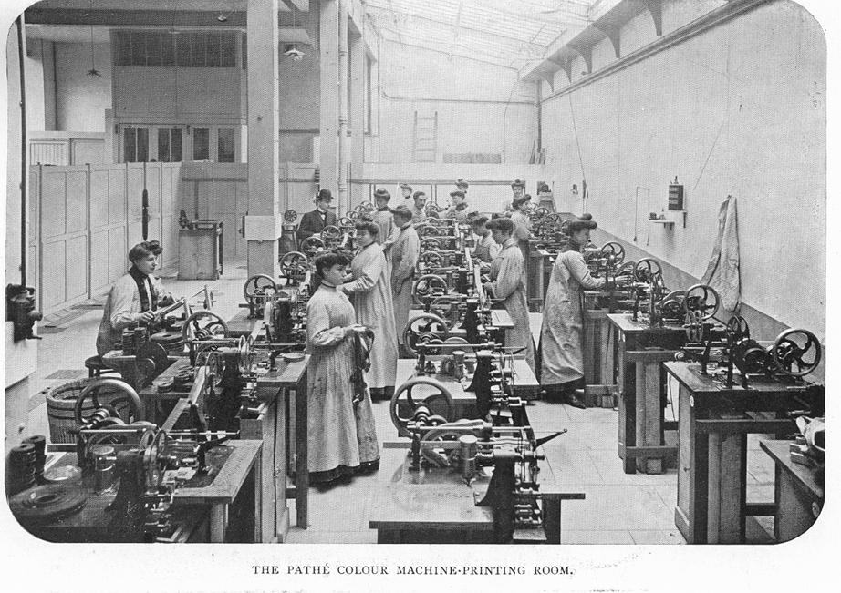
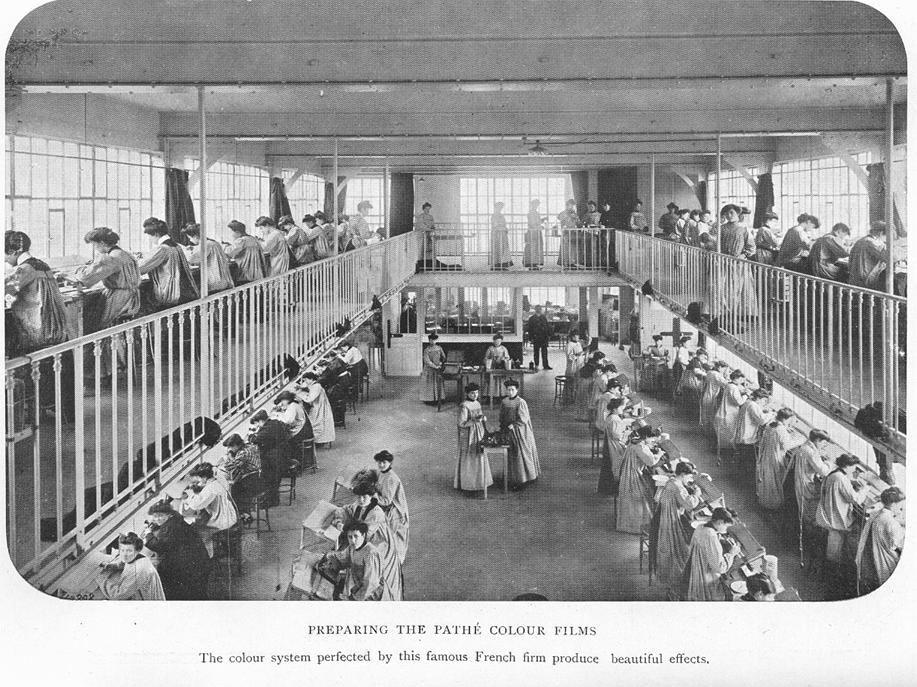

I. Le temps des muets
A. Les origines du cinéma et ses pionniers: l'art "de la lumière et de l'ombre" et "l'illusion du mouvement à partir d'images fixes."
"If the 19th century marked a kind of cultural birth or rebirth of vision, one favorite object of society's collective gaze was the phenomenon of movement [such as the sewing machine or loom…] The rhythm of society had begun inexorably to accelerate." (Williams, 16)
Nos thèmes aujourd'hui: le mouvement et comment les films des Lumière, de Méliès et de Guy mettent en évidence le mouvement; la grande liste des premiers!
1. Les Lumière
"Louis Lumière est le premier cinéaste du réel, [qui] sait organiser avec un sens aigu de l'image, du cadre, de l'éclairage, du mouvement et de la tension à l'intérieur d'un plan unique." (Jeancolas, 12) Son talent de photographe a laissé une grande influence sur le cinéma français: l'intégrité de l'image (adapté de Williams, 30).
• le 22 mars 1894: pour la première fois grâce au Cinématographe Lumière, un film, Sortie d'Usine devient visible par toute une assemblée.
• le 28 décembre 1895: au Salon Indien du Grand Café à Paris, a lieu la première séance publique payante (1 franc) du Cinématographe Lumière. Les frères Lumière "ont constitué les premiers le cinéma en spectacle populaire de masse" (Jeancolas, 11).
2. Georges Méliès le premier cinémagicien: C'est "un professionnel du spectacle. Il avait acheté un petit théâtre sur les boulevards [Théâtre Robert-Houdin]—qui étaient alors le centre de la vie mondaine à Paris—et y donnait des spectacles d'illusions: prestidigitation, féerie et merveilleux…" (Jeancolas, 13). C'est le père du trucage (les effets spéciaux). «Le trait de génie de Georges Méliès fut d'employer systématiquement au cinéma la plupart des moyens du théâtre, par exemple scénarios, acteurs, costumes, maquillage, décors, machineries, divisions en scènes ou en actes. Le cinéma les utilise aujourd'hui encore.» (animage.org
• le 10 juin 1896 il tourne son premier film dans le jardin familial de Montreuil. Ses films sont projetés dans son théâtre où ils remplacent les séances de prestidigitation. Il crée ensuite une société de production, la Star Film, fait construire son premier studio durant l'hiver 1896,le premier studio du monde, puis un second en 1908. Il y tournera entre 600-800 films (Jeancolas, 13).
•1902: Le Voyage à la lune est, selon le catalog de Star Film, une Grande Féerie [fairy opera/spectacle] en 30 tableaux tirée du roman de Jules Verne. De la terre à la lune Chapitre 19: "La distance est un vain mot, la distance n'existe pas."
C'est un pionnier du montage [editing], le premier cinéaste-auteur: il gère son propre studio, produit tous ses films, écrit tous les scénarios, organise tous les effets spéciaux (cinématographiques et mécaniques), organise un système de distribution de ses films… Le voyage est le film le plus important du début du cinéma que les spectateurs regardent toujours avec tant d'enthousiasme et qui ressemble à un film narratif de nos jours (histoire, acteurs, changements de temps et de lieu…) (adapté de Gunning, 70).
Dans ce film, il n'y a pas de distance, seulement des transformations, du mouvement, sans cesse.
Hommages à Méliès:
"Tonight, tonight" music video des Smashing Pumplins.
The Invention of Hugo Cabret de Brian Selznick: book et website; Hugo de Martin Scorcese
Pour savoir plus sur le rôle des femmes dans la colorisation du film, voir French Film Colorists et La Couleur au cinéma
|  |  |
3. Les premiers grands capitalistes du cinéma movie moguls: Pathé (1896) et Gaumont (1895). Gaumont engage Alice Guy: la première cinéaste professionnelle au monde.
Charles Pathé: "l'homme qui, le premier, fait du cinéma une industrie"
• le 28 décembre 1897: la deuxième société Pathé Frères est fondée au capital d'un million de francs. "C'est deux ans pour jour après la première séance du Grand Café que le cinéma entre dans le champs de la grande finance: il a été une industrie bien avant d'être reconnu comme un art. (Jeancolas, 14) En 1908 le premier hebdomadaire d'actualités filmées paraît: le Pathé-Journal.
Léon Gaumont: à 29 ans, il dirige le Comptoir général de photographie (magasin de produits photographiques) et permet à sa secrétaire, Alice Guy, de tourner des films de démonstration pour vendre ses caméras. Elle devient "directrice du Service des théâtres de prises de vue" et Gaumont en voit vite la valeur commerciale.
Les films discutés en classe et le vocabulaire
Lumière: (du DVD narré par Bertrand Tavernier)
La sortie des usines Lumière à Lyon (le premier film)
Le Débarquement du Congrès de Photographie à Lyon
Le Déjeuner du bébé (le premier film amateur, le premier remake)
L'Arroseur arrosé (la première comédie, le premier film de fiction)
La Partie de cartes
(la première publicité)
L'Arrivée d'un train en gare de la Ciotat (le premier chef d'œuvre, le premier film d'épouvante)
La Démolition d'un mur (un accident de rembobinage devient un effet spécial!)
Lyon, ville natale du Cinématographe
Méliès
Un voyage à la lune (Le premier film de science fiction; le premier film de parodie de science fiction; la première superproduction (blockbuster), le premier road-movie, etc.)
Guy
Alice Guy tourne une phonoscène sur le théâtre de pose à Buttes-Chaumont (1905)
Sur la barricade (1907)
Une héroïne de quatre ans (1907)
Ressources citées:
http://www.animage.org/index.php?page=cinema&article=georges-melies
Tom Gunning, "A Trip to the Moon" in Film Analysis (New York: Norton, 2005)
Jean-Pierre Jeancolas, Histoire du cinéma français, 3e édition (Paris: Armand Colin, 2011)
Alan Williams, Republic of Images (Cambridge: Harvard University Press, 1992)